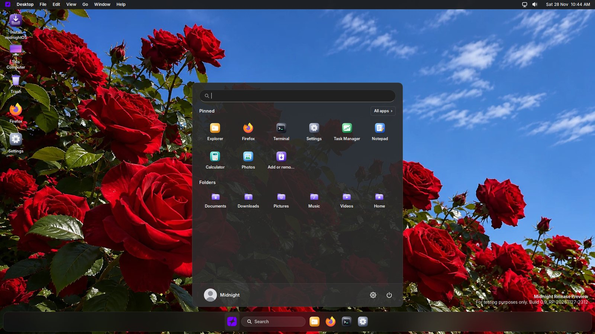
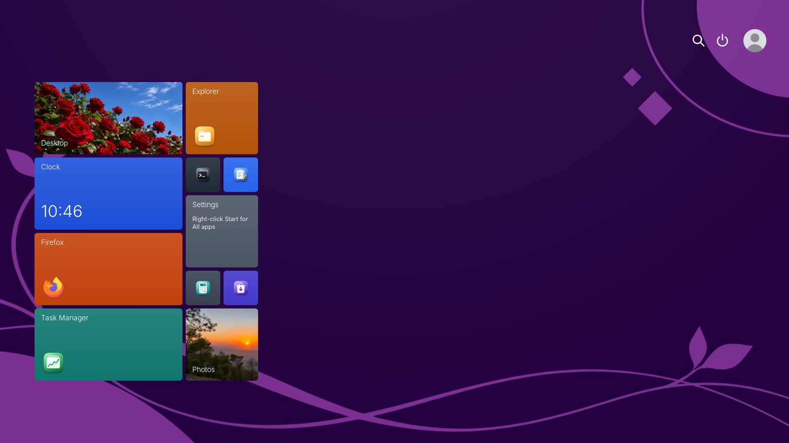
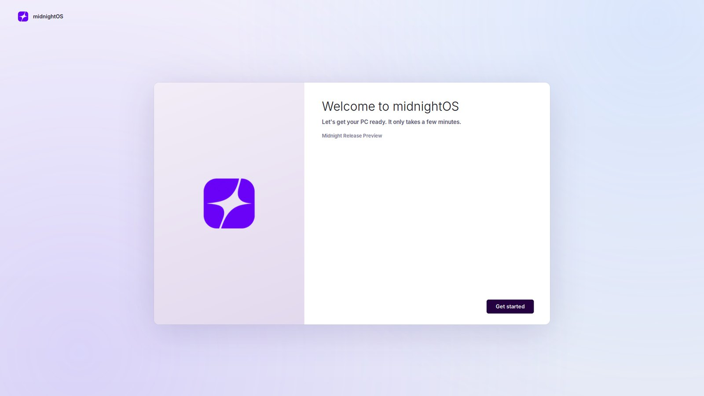

Desktop, Start and taskbar
A familiar desktop that's quick to learn and pleasant to use every day.
- Start with pinned apps, folders and search across apps, settings and files
- Optional full-screen Start with live tiles over a background in your Start colour
- Tablet mode: full-screen Start as the home screen
- Wet Glass taskbar with adjustable transparency
- Floating or full-width taskbar with live window previews
- Quick settings for Wi-Fi, sound, brightness and more
- A menu bar that shows the focused app's menus

Windows and multitasking
Keep several apps in view and find any window fast.
- Snap zones: drag a window to an edge, or use Super + arrow keys
- All windows shows every open window at once
- Smooth animations that you can turn down in Accessibility
- Reopen your apps after you sign in

Apps included
The everyday apps are already there.
- Firefox for the web
- Explorer for your files, with thumbnails, archives and ISO mounting
- Text Editor, Calculator, Photos, Terminal and Task Manager
- Many Windows programs (.exe) run through a compatibility layer

Settings
Find any setting from one place, organised by what you want to do.
- Personalization: background, colours, lock screen, Start, taskbar, fonts and icons
- Network: Wi-Fi, VPN, mobile hotspot with a QR code, private DNS and data usage
- System: display, sound, notifications, power, storage and backup
- Accounts: your name, PIN and face sign-in

Security and privacy
Protection that's on from the start and easy to understand.
- Sign in with a PIN or your face; face data never leaves your PC
- Admin Approval asks before any app changes the system
- Vault: an encrypted folder for private files
- Firewall and on-demand virus scan in Settings

Install and first start
From Windows to your own desktop in a few steps.
- From a USB stick: install next to Windows, sharing the space with a slider, or erase the disk
- From Windows: open the disc image and run setup.exe to replace Windows
- Your Windows Users folder is kept and shows up as Windows files
- First start sets up time zone, network, your name, PIN, face sign-in and theme
And there's more
Useful tools that are built in, not extra downloads.
Phone Connect
Notifications, texts and files from your phone on your PC.
Game Overlay
An FPS counter, recording and quick settings over your game (Super + G).
Accessibility
Magnifier, narrator, colour filters, on-screen keyboard and sticky keys.
Live captions
Captions for any audio, created on your PC without an internet connection.
Search answers
Sums, units, timers, definitions, currencies and the weather, right in search.
Backup
Hourly backup to a USB drive, with older versions of your files kept.
Night light and dark mode
Warmer colours and dark mode on a schedule you choose.
Storage Cleanup
Free up space by clearing temporary files and emptying the Trash.
Features shown are in the Release Preview and may change. Face sign-in needs a camera. Phone Connect needs the companion app on your phone.